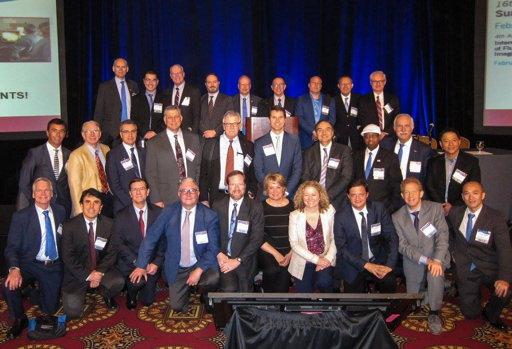

Celebrating a Life of Impact
Dr. Mathias Fobi
Surgeon · Inventor · Mentor · Legend
🎂 Born September 21, 1946 — Nkwen, Cameroon
Celebrating a Life of Impact
Surgeon · Inventor · Mentor · Legend
🎂 Born September 21, 1946 — Nkwen, CameroonDr. Mathias Fobi was more than a surgeon—he was a transformative force in medicine. From his village roots in Nkwen, Cameroon to operating rooms across the globe, he pioneered techniques that changed lives, mentored generations of surgeons, and gave back to his community in ways that continue to ripple through families today.

Dr. Mathias Fobi was born September 21, 1946, in Nkwen, Cameroon. After receiving a prestigious ASPAU scholarship, he emigrated to the United States and earned his medical degree, eventually becoming Chief of Surgery at UC Davis.
He went on to invent the Fobi Pouch—a landmark modification to gastric bypass surgery that became the gold standard for long-term weight loss surgery worldwide. As president of both ASMBS and IFSO, he shaped the global trajectory of metabolic and bariatric surgery.
Born September 21, 1946, in the village of Nkwen (now Bamenda III Council).
From humble beginnings in a small village, his journey was marked by curiosity, resilience, and an unyielding drive to learn.
One of the inaugural students, helping build the school brick by brick.
His leadership qualities emerged early—elected student council president and captain of the basketball team.
Received the prestigious ASPAU scholarship to study in America.
Arrived in the U.S. with little more than ambition and a hunger to succeed—qualities that would define his career.
Earned MD from University of Cincinnati; became Chief of Surgery.
His surgical talent was evident early—he was appointed Chief Resident in his final year of residency, a rare honor.
Invented the Fobi Pouch—banded gastric bypass with silastic ring.
A modification that prevented stomach pouch stretching, giving patients lasting results. It became the gold standard worldwide.
ASMBS President, IFSO President,IFS board chair—shaping bariatric surgery worldwide.
Led the two largest bariatric surgery societies in the world, mentoring surgeons on every continent.
Founded the NGWEBIFOR Foundation to send medical equipment to Cameroon hospitals.
Named after his grandmother Ngwebefor, the foundation continues to bridge healthcare gaps between continents.
Known as "Uncle Mal" — sponsoring countless students' education in Cameroon and the U.S.
Beyond medicine, his greatest legacy may be the lives he lifted through education and mentorship.
Invented the banded gastric bypass—a modification using a silastic ring that prevents stomach pouch stretching, becoming the gold standard for long-term weight maintenance.
ASMBS President (2005–2007) and IFSO President (2008–2009). Chaired the IFSO Board of Trustees (2013–2015), shaping bariatric surgery worldwide.
Recipient of the ASMBS Lifetime Achievement Award and IFSO Lifetime Membership—recognizing transformative contributions to metabolic and bariatric surgery.
Performed life-changing surgeries on celebrities including Roseanne Barr, Randy Jackson, and Jennifer Holiday, bringing bariatric surgery into the mainstream.
Founded the NGWEBIFOR Foundation (named after his grandmother) to send medical equipment and supplies to hospitals in Cameroon. Also established ACPA to support Cameroonian physicians.
As Director at Mohak Bariatrics, Indore, India, he mentored a new generation of surgeons. Known as "Uncle Mal," he sponsored countless students' education in Cameroon and the U.S.
Have a memory, story, or word of celebration? Share it with the family.
Dr. Fobi was a devoted husband to Helen Jean N. Fobi, and a proud father to four accomplished daughters: a doctor, two lawyers, and a business executive. Despite his global fame, he remained "Uncle Mal" to his community— a figure of generosity who sponsored countless students' education in Cameroon and the United States.




September 21, 2026 marks 80 years of a life defined by purpose, healing, and generosity. Join us in celebrating Dr. Mathias Fobi—surgeon, inventor, mentor, and beloved community figure.
Share Your Birthday Message